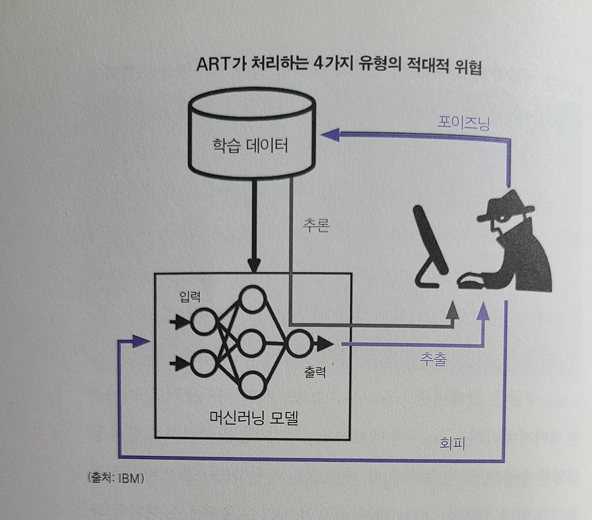

[EAI005] 인공지능의 견고성/안정성
2016년 자율주행차의 데이터와 프라이버시에 대한 청문회가 열렸을 때 기업 대표들은 기업의 자율에 맡기면 문제가 해결된다고 하였다.
이에 민주당 의원은 다음과 같이 대답했다. “30년 전에도 증인들이 여기 앉아서 에어백과 시트 벨트에 대해 똑같이 말했습니다. 개별기업에 맡겨야한다고 말입니다. ‘의무적인 안전과 프라이버시 표준이 있어야 합니까?‘라는 질문에 대한 대답은 ‘예’입니다.
- 2018년 8월, 미국에서 구성된 “인공지능에 대한 국가안보위원회"에서 밝힌 인공지능을 이용한 국가 안보위협 5가지
- 1)인공지능을 이용한 정보활동
- 2)개인정보 데이터수집
- 3)사이버 공격
- 4)적대적 인공지능
- 5)인공지능을 이용한 바이오 기술
UN 역시 지구온난화, 핵무기와 함께 인공지능을 3대 위협으로 명시했다.
1. 적대적(adversarial) 머신러닝의 위험성
딥러닝으로 학습된 인공지능은 떄로는 아주 간단한 의도적인 데이터 인식에도 매우 취약할 수 있다!
- 2015년, 와이오밍 대학교와 코넬대학교의 학자들은 사람 수주닁 성능을 보이는 심층 신경망마저 사람의 누누으로 알아볼 수 없는 노이즈를 넣었을 때 잘못 인식하는 경우를 발견했다.
- 인공지능의 착시현상
- 이렇게 인공지능으로 하여금 의도적으로 픽셀을 하나하나씩 인식하여 오류를 일으키는 데이터들의 문제점.(적대적 사례)
- 도로 광고판에 사람이 인식하지 못하는 짧은 유령 이미지를 넣음으로써 자율주행자동차를 위험에 빠트릴 수 있다.
- 특히 딥러닝으로 학습한 모델의 경우, 적대적 공격에 매우 취약하다. 악용될 가능성이 매우 많다! (data poisoning)
- 이러한 사례들에 적절히 대응하지 않으면, 인공지능을 신뢰하여 사용하기 어려워진다.
- 따라서 인공지능 학습방식의 대안을 고민하고 있다.
- adversarial patch.
- 객체 위에 스티커처럼 덧붙여 잘못된 결과를 유도할 수 있다.
- 여러 군데에서 악용될 수 있는데, 도로 표지판에 스티커를 붙임으로써 잘못인식하게 만들어 범죄에 악용될 가능성 또한 존재한다.
- 실제 2019년 벨기에의 KU루벤대학교 팀은 컬러로 인쇄한 카드보드로 스마트 카메라를 무력화할 수 있다는 연구결과를 발표했다.
- 즉, 단순히 도로 표시판에 작은 패치를 붙이는 것 만으로도 오류를 발생시켜, 운전자나 보행자를 위험하게 할 가능성이 있다!
1.1. 적대적 머신러닝에 대응하기 위한 노력들
- 마이크로소프트, IBM, 엔비디아, 토론토대학교 등이 협력해 만든 “적대적 ML 위협 매트릭스” 프레임워크
- 프레임워크에서 밝힌 머신러닝을 손상시키는 주요 적대적 전술들
- 1)기능적 추출
- 입력을 반복해 질의하면서모델을 무단으로 재구축한다.
- 복사본을 만들어 분석해, 최종적으로 원본 모델에 추가적인 공격을 하게 만든다.
- 특히 금융과 관련된 모델들에서 악용될 가능성이 크다.
- 2)모델 회피
- 인간은 알기 어려운 픽셀 수준의 변경을 통해, 잘못된 결과를 유도한다.
- 3)모델 전도
- 머신러닝 모델을 구축하는 데 사용한 학습 데이터를 추출해 공격하는 기법.
- 주어진 입력에 대해 출력하는 결과와 신뢰도를 분석해, 역으로 데이터를 추출하는 공격을 한다.
- 4)모델 포이즈닝
- 특정한 결과가 나오도록 일부러 학습 데이터를 지속적으로 오염시킨다.
- 마이크로소프트의 챗봇 테이, 의도적으로 혐오발언 데이터를 학습시킨다.
- 1)기능적 추출
전통적인 머신러닝은 데이터 - 딥러닝 - 모델 - 결과물 순으로 이뤄지는데, 적대적 공격은 여기서 모델 부분에 오염된 데이터를 집어넣어 잘못된 결과물이 나오도록 유도한다.
2. 자율주행자동차는 왜 사고를 일으키는가?
추천 시스템 등은 잘못 판단한다고 치명적인 결과를 가져오지는 않지만, 자율주행 자동차는 치명적인 결과를 낳을 수 있다는 점에서 더욱 조심할 필요가 있다!
- 자전거를 타고 가는 사람을 인식하지 못한 우버의 사례
- 이를 통해 많은 사람들이 아직도 자율주행 자동차가 실험단계임을 알게 되었다.
- 정부 조사에서 좀 더 부드럽게 주행하기 위해 긴급브레이크 시스템이 작동하지 않도록 조작했음이 밝혀졌다.
이런 중대한 일들을 개발자, 회사가 마음대로 설정하도록 방치해도 되는가?
- 자율주행 기술이 더더욱 운전자의 개입을 배제하는 방향으로 발전하면서 더더욱 심각한 사고들이 증가하고 있다.
- 제일 어려운 것은 역시 다른 운전자의 행동을 예측하는 것.
사람이 자동차를 몰 떄 역시, 다른 운전자와 눈을 맞추더라도 누가 먼저 갈지 맞추는 것이 어렵다. 하물며 인공지능은 더욱 어려울 것이다.
- 반대로 자율주행 자동차를 대상으로 예상치 못한 행동을 해서 의도적으로 사고를 일으킬 수도 있다!!
- 미국 자동차 안전국, 자율주행 운행 현황을 보여주는 AV TEST initiative
사이트 개설
- 차종, 운행상황, 주행 도록, 개발사와 운영사의 정보 등을 투명하게 제공
- 자율주행차의 현재 성능과 안전 문제에 대하여 시민들이 더 명확히 판단할 수 있게하는 기반이 될 수 있다!
- 테슬라의 법률 고문 에릭 윌리엄스가 밝힌 자율주행이 제대로 대응하지 못하는 상황들
- 정지물체
- 길에있는 장애
- 응급 차량
- 건설지역
- 통제되지 않은 다지교차로
- 폐쇄구간
- 혹독한 날씨
- 적대적인 자동차
- 지도에 없는 집 등
- 이러한 상황에도 테슬라는 완전자율주행기능(FSD)이라는 첨단 버전을 1만 달러에 팔고 있다!
- 인텔의 모빌 아이, RSS 프레임워크. 안전 운전에 대한 수학적 모델을 제시하며, 안전 운전의 기본 원칙 5가지
- 1)앞 차에 부딪히지 않는다.
- 2)무모하게 끼어들지 않는다.
- 3)통행권은 주어지는 것이지 택하는 것이 아니다.
- 4)앞이 안보이는 곳에셔ㅓ는 주의한다.
- 5)다른 사고를 내지 않고 충돌을 피할 수 있다면 반드시 그렇게 한다.
너무 당연한 내용 아닌가?
3. 로봇이 일으키는 사고들
- 인공지능 로봇은 산업용 로봇과 달리 공장 안에서 머무는 기계가 아니다.
그렇다면 스스로 판단하는 것에 대한 신뢰성/안전성의 문제는? 더욱이 로봇은 실제로 물리적인 행동을 하기 때문에 더더욱 위험하다.
- 인공지능 로봇 이전에 산업용 로봇들의 사고
- 단순 조립 로봇이기에 지금까지는 사람의 실수를 원인으로 보았다!
- 그러나 인공지능 로봇은? 소프트웨어적인 문제점.
- 로봇이 잘못판단한 예시
- 2018년 뉴저지, 아마존 배송센터. 곰 퇴치용 가스 캔이 터지면서 사고가 발생. 자동화 기계가 가스캔에 구멍을 내서 독성연기가 퍼져나갔다.
- 2016년 7월, 경비순찰로봇 K5가 아이를 인식하지 못하고 넘어가는 사고가 발생.
- 안내용, 조리용, 가정용 등으로 인공지능 로봇이 사용되면서 다양한 유형의 사고가 발생한다.
- 2016년, 중국 선전의 첨단기술 전시회. 로봇이 부스를 부수고 사람을 다치게 하는 사고 발생.
- 2020년 12월 광저우, 에스컬레이터로 진입한 로봇이 넘어지면서 문제가 발생.
간단한 사고는 단순히 제조회사/운영회사가 책임지면 되지만, 만약 음식 배달로봇이 갑자기 길로 나와서 자동차가 이를 못보고 사고를 낸다면, 그것은 간단히 도로에 뛰어든 강아지와 같은 것일까? 사고의 책임 범위를 어디까지 할 것인가?
4. 딥페이크의 문제와 대응
- 2009~2016년까지 온라인에 공개된 300개의 주간 연설 영상을 학습에 사용했다.
공적으로 발표된 영상들이 역으로 딥페이크 영상을 만드는 데 사용될 수 있다!
- 딥페이크 포르노
- 아예 페이크앱이라는 어플리케이션을 통해서 누구나 딥페이크 영상들을 만들 수 있게 되었다.
- 2018년부터는 정치적 영상들을 딥페이크로 제작해 가짜 뉴스들을 퍼트리기도 한다.
- 진짜 영상 사이에 살짝살짝 가짜 영상만 집어넣는 경우, 더더욱 판단하기 힘들 것이다.
- 딥페이크 영상을 추적하는 센서티에 따르면, 영상이 무려 두 배 이상 늘었다고 한다.
- 딥페이크를 찾아내기 위한 연구
- 1)뉴욕주립대 시웨이 류 교수, 영상 속 얼굴이 눈을 어떻게 깜박거리는가에 대한 연구
- 보통 2~1-초마다 한번씩 눈을 깜빡거리는데, 딥페이크의 경우 정지 이미지로 주로 학습하기에 영상의 얼굴이 눈을 깜빡거리지 않는 측면에 주목.
- 그러나 만약 2~10초마다 랜덤하게 눈을 깜빡거리도록 만든다면?
- 보통 2~1-초마다 한번씩 눈을 깜빡거리는데, 딥페이크의 경우 정지 이미지로 주로 학습하기에 영상의 얼굴이 눈을 깜빡거리지 않는 측면에 주목.
- 2)미국 방위고등연구국, 미디포팀을 만들어 딥페이크 콘텐트를 확인하는 도구를 개발
- 3)로스앤러스국립연구소, 이미지에 실제 저장된 정보량을 측정하는 방식으로 딥페이크 이미지를 확인.
- 조작된 이미지가 시각적 요소를 재사용했기에 진짜 사진보다 더 단순하다.
- 4)딥페이크 탐지 기술을 비교분석하고 평가하기 위한 벤치마크 사이트.
- 뮌헨공과대학, 나폴리대학, 뉘른베르크 대학에서 공개한 페이스포렌식스(FaceForensics) 데이터셋.
- 그러나 젠더/피부색의 관점에서 편향이 있다. 특히 특정 인종에 대해서 10.7%에 달하는 오류율.
하나의 문제를 푸는데, 또 다른 문제가 내재하고 있을 위험성이 있다.
- 뮌헨공과대학, 나폴리대학, 뉘른베르크 대학에서 공개한 페이스포렌식스(FaceForensics) 데이터셋.
- 1)뉴욕주립대 시웨이 류 교수, 영상 속 얼굴이 눈을 어떻게 깜박거리는가에 대한 연구
5. 주요 연구그룹은 안전성 연구를 어떻게 하는가?
컴퓨터 과학에는 정답이 없다! 다양한 시도를 해볼 수 있다.
- 견고성에 관한 연구 방향성
- 1)인공지능 모델의 취약성을 개선하는 방향성
- 2)데이터를 추출하거나 공격에 이용하는 것을 방지하는 방향성
- 초기 오픈AI에서 간단한 방식으로 인공지능 모델이 오작동 할 수 있음이 밝혀지면서, 이를 막기 위한 학습 방식에 대한 연구.
- 미국 국방성의 방위고등연구계획국에서 인공지능의 안전성/견고성에 가장 예민하게 반응하고 있다.
- 기만에 대응하는 견고성 보장(GARD) 프로그램.
- 머신러닝에 대한 적대적 기만 공격을 막기 위한 새로운 방어 기술을 개발한다.
- 1)방어 가능한 머신러닝을 위한 이론적 기반
- 2)다양한 범위로 설정한 상황에서 방어가능한 시스템 개발과 테스트
- 3)위협 시나리오와 관련된 머신러닝 방어력을 측정하기 위한 새로운 테스트베드
- 다양한 연구 방향성을 모색하고 있다.
- 하바 시겔만 박사, 생물학에서 볼수 있는 면역체계와 같은 접근법.
- 인텔과 조지아 공과대학, 셰이프시프터 프로젝트.
- 개체 탐지기에 보안 취약성이 있으며, 개체탐지기를 잘못 판단하게 할 수 있는 적대적 머신러닝 기술이 있다!
- 기만에 대응하는 견고성 보장(GARD) 프로그램.
- 딥마인드, 안정성을 별도의 주제로 설정해 연구.
- 또한 시스템, 알고리즘, 서비스 관점에서 안정성을 담보하기 위한 평가 방법과 공격-방어 연구를 수행하고 있다.
- 2019년에만 20여편의 논문을 발표한 것으로 보면, 매우 중요하게 이 분야를 보고 있음을 알 수 있다.
- 이탈리아의 패턴인식 시트템을 연구개발하는 PRA Lab
- 머신러닝 알고리즘의 보안을 평가할 수 있는 오픈소스 라이브러리 secML.
- 파이토치, 사이킷런 등을 활용한 지도학습 방식의 신경망 알고리즘을 대상으로 침투/포이즈닝 같은 공격에 대응하는 라이브러리를 제공한다.
- 기업의 사례
- IBM, 적대적 견고성 툴박스.(ART, Adversarial Robustness Toolbox)
- 리눅스 재단에 공여해 많은 사람들이 공동으로 연구를 발전시키도록 했다.
 - 개체 탐지, GAN, 자동 음성 인식, 견고성 인증을 포함한 과업을 지원.
- 데이터/프라이버시가 중요해짐에 따라서 추론공격 대응 기술에 대한 관심이 높아지고 있다.
- ART가 제공하는 추론공격 대응 기능
- 1)멤버십 추론. 학습 데이터에 특정 레코드 정보가 들어있는지 확인하기 위해 악의적 공격자를 재현.
- 2)특징 추론. 어떤 특징의 특정 값이 학습 데이터에 있는가를 학습모델에 접근하면서 알아내고자하는 공격.
- 3)모델 전도. 학습된 머신러닝 모델을 파악해, 학습 데이터의 대표적인 평균 특징을 구성한다. 개인 정보와 같은 민감한 데이터가 유출될 위험성이 있다.
- ART가 제공하는 추론공격 대응 기능
- 리눅스 재단에 공여해 많은 사람들이 공동으로 연구를 발전시키도록 했다.
- 구글, 클레버 한스 소프트웨어 라이브러리
- 아마존, 세이지메이커 모델 모니터와 디버거.
- IBM, 적대적 견고성 툴박스.(ART, Adversarial Robustness Toolbox)
- 적대적 공격을 방어하기 위한 기법
- 가능한 모든 적대적 사례를 학습 데이터에 미리 포함시켜 학습범위를 넓히는 적대적 훈련 방식
- 인공지능 시스템의 결과값을 분석해 모델을 추론하지 못하도록, 결과값을 노출되지 않거나 분석하지 못하도록 하는 방법
- 적대적 공격을 탐지해 차단하는 바식
- 모델에 쿼리를 반복하는 것을 대응하고자 쿼리 횟수를 제한하거나 데이터에 대한 암호화 등의 비식별과 기법
- 국내의 경우
- 고려대학교, 인공지능 스피커의 소스코드를 분석해 취약점을 분석하는 연구
- 카이스트, 설명가능한 모델 연구. 공개된 공격-방어 모듈을 프레임워크에 포함해 이를 통해 신뢰성을 평가할 수 있는 분석 내용 제시.
- 서울대, 공주대, 아주대 등에서도 취약점 탐지 및 방어기술 개발을 위한 프로젝트들을 진행하고 있다.